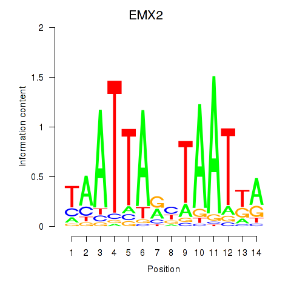

Motif ID: EMX2
Z-value: 0.549
Transcription factors associated with EMX2:
| Gene Symbol | Entrez ID | Gene Name |
|---|---|---|
| EMX2 | ENSG00000170370.10 | EMX2 |
![](http://string-db.org/api/image/network?network_flavor=evidence&limit=0&species=9606&caller_identity=MARA&identifiers=9606.ENSP00000263708%0D9606.ENSP00000335306%0D9606.ENSP00000380153%0D9606.ENSP00000352980%0D9606.ENSP00000411645%0D9606.ENSP00000411132%0D9606.ENSP00000300119%0D9606.ENSP00000323926%0D9606.ENSP00000376914%0D9606.ENSP00000275699%0D9606.ENSP00000265052%0D9606.ENSP00000261693%0D9606.ENSP00000270458%0D9606.ENSP00000366581%0D9606.ENSP00000209873%0D9606.ENSP00000264896%0D9606.ENSP00000348258%0D9606.ENSP00000260605%0D9606.ENSP00000297001%0D9606.ENSP00000421725%0D9606.ENSP00000257515%0D9606.ENSP00000335382%0D9606.ENSP00000382707%0D9606.ENSP00000398824%0D9606.ENSP00000401946%0D9606.ENSP00000284885%0D9606.ENSP00000399968%0D9606.ENSP00000318423%0D9606.ENSP00000320965%0D9606.ENSP00000358867%0D9606.ENSP00000418648%0D9606.ENSP00000300870%0D9606.ENSP00000281081%0D9606.ENSP00000244333%0D9606.ENSP00000233838%0D9606.ENSP00000343000%0D9606.ENSP00000278856%0D9606.ENSP00000314508%0D9606.ENSP00000368414%0D9606.ENSP00000348706%0D9606.ENSP00000283871%0D9606.ENSP00000235521%0D9606.ENSP00000363988%0D9606.ENSP00000436714%0D9606.ENSP00000391372%0D9606.ENSP00000350934%0D9606.ENSP00000350159%0D9606.ENSP00000264968%0D9606.ENSP00000261402%0D9606.ENSP00000351410%0D9606.ENSP00000358153%0D9606.ENSP00000304846%0D9606.ENSP00000316891%0D9606.ENSP00000342295%0D9606.ENSP00000263182%0D9606.ENSP00000340546%0D9606.ENSP00000430505%0D9606.ENSP00000368966%0D9606.ENSP00000308405%0D9606.ENSP00000345731%0D9606.ENSP00000330442%0D9606.ENSP00000284562%0D9606.ENSP00000193391%0D9606.ENSP00000343027%0D9606.ENSP00000289352%0D9606.ENSP00000428417%0D9606.ENSP00000377700%0D9606.ENSP00000366974%0D9606.ENSP00000393719%0D9606.ENSP00000293922%0D9606.ENSP00000329880%0D9606.ENSP00000358162%0D9606.ENSP00000308165%0D9606.ENSP00000343282%0D9606.ENSP00000392481%0D9606.ENSP00000350767%0D9606.ENSP00000305852%0D9606.ENSP00000311320%0D9606.ENSP00000349719%0D9606.ENSP00000334287%0D9606.ENSP00000379669%0D9606.ENSP00000235382%0D9606.ENSP00000383303%0D9606.ENSP00000278198%0D9606.ENSP00000430487%0D9606.ENSP00000471824%0D9606.ENSP00000367034%0D9606.ENSP00000353415%0D9606.ENSP00000288602%0D9606.ENSP00000382794%0D9606.ENSP00000265440%0D9606.ENSP00000347168%0D9606.ENSP00000346316%0D9606.ENSP00000344101%0D9606.ENSP00000223167%0D9606.ENSP00000332690%0D9606.ENSP00000247191%0D9606.ENSP00000355810%0D9606.ENSP00000352717%0D9606.ENSP00000353624%0D9606.ENSP00000303111%0D9606.ENSP00000234142)
{kind=link}
{kind=link}
{kind=link}
{kind=link}
{kind=link}
Top targets:
Gene overrepresentation in biological_process category:
| Log-likelihood per target | Total log-likelihood | Term | Description |
|---|---|---|---|
| 0.1 | 0.3 | GO:0010730 | negative regulation of hydrogen peroxide biosynthetic process(GO:0010730) |
| 0.0 | 0.1 | GO:0014839 | myoblast migration involved in skeletal muscle regeneration(GO:0014839) |
| 0.0 | 0.3 | GO:2000301 | negative regulation of synaptic vesicle exocytosis(GO:2000301) |
| 0.0 | 0.1 | GO:1904017 | cellular response to Thyroglobulin triiodothyronine(GO:1904017) |
| 0.0 | 0.1 | GO:0036269 | swimming behavior(GO:0036269) |
| 0.0 | 0.3 | GO:0009253 | peptidoglycan metabolic process(GO:0000270) peptidoglycan catabolic process(GO:0009253) |
| 0.0 | 0.5 | GO:0046007 | negative regulation of activated T cell proliferation(GO:0046007) |
| 0.0 | 0.1 | GO:0043438 | acetoacetic acid metabolic process(GO:0043438) |
| 0.0 | 0.1 | GO:0098507 | polynucleotide 5' dephosphorylation(GO:0098507) |
| 0.0 | 0.2 | GO:0006572 | tyrosine catabolic process(GO:0006572) |
| 0.0 | 0.1 | GO:0002644 | negative regulation of tolerance induction(GO:0002644) positive regulation of interleukin-4 biosynthetic process(GO:0045404) |
| 0.0 | 0.2 | GO:0071877 | regulation of adrenergic receptor signaling pathway(GO:0071877) |
| 0.0 | 0.2 | GO:2000158 | positive regulation of ubiquitin-specific protease activity(GO:2000158) |
| 0.0 | 0.1 | GO:2000523 | regulation of T cell costimulation(GO:2000523) positive regulation of T cell costimulation(GO:2000525) |
| 0.0 | 0.2 | GO:0006116 | NADH oxidation(GO:0006116) |
| 0.0 | 0.1 | GO:0006436 | tryptophanyl-tRNA aminoacylation(GO:0006436) |
| 0.0 | 0.1 | GO:0046013 | regulation of T cell homeostatic proliferation(GO:0046013) |
| 0.0 | 0.1 | GO:0060084 | synaptic transmission involved in micturition(GO:0060084) |
| 0.0 | 0.1 | GO:0002426 | immunoglobulin production in mucosal tissue(GO:0002426) |
| 0.0 | 0.1 | GO:1900133 | regulation of renin secretion into blood stream(GO:1900133) |
| 0.0 | 0.1 | GO:0060648 | mammary gland bud morphogenesis(GO:0060648) |
| 0.0 | 0.1 | GO:0050955 | thermoception(GO:0050955) |
| 0.0 | 0.1 | GO:1903244 | positive regulation of cardiac muscle adaptation(GO:0010615) positive regulation of cardiac muscle hypertrophy in response to stress(GO:1903244) |
| 0.0 | 0.1 | GO:0032468 | Golgi calcium ion homeostasis(GO:0032468) |
| 0.0 | 0.1 | GO:1903764 | regulation of potassium ion export across plasma membrane(GO:1903764) |
| 0.0 | 0.1 | GO:0015862 | uridine transport(GO:0015862) |
| 0.0 | 0.1 | GO:1901545 | cellular response to raffinose(GO:0097403) response to raffinose(GO:1901545) |
| 0.0 | 0.1 | GO:0051013 | microtubule severing(GO:0051013) |
| 0.0 | 0.1 | GO:0001550 | ovarian cumulus expansion(GO:0001550) fused antrum stage(GO:0048165) |
| 0.0 | 0.1 | GO:2000124 | regulation of endocannabinoid signaling pathway(GO:2000124) |
| 0.0 | 0.1 | GO:1990637 | response to prolactin(GO:1990637) |
| 0.0 | 0.0 | GO:0046586 | regulation of calcium-dependent cell-cell adhesion(GO:0046586) |
| 0.0 | 0.0 | GO:0060166 | olfactory pit development(GO:0060166) |
| 0.0 | 0.0 | GO:0010513 | positive regulation of phosphatidylinositol biosynthetic process(GO:0010513) |
| 0.0 | 0.1 | GO:0061030 | epithelial cell differentiation involved in mammary gland alveolus development(GO:0061030) positive regulation of chemokine-mediated signaling pathway(GO:0070101) |
| 0.0 | 0.0 | GO:0080154 | regulation of fertilization(GO:0080154) |
| 0.0 | 0.2 | GO:0038124 | toll-like receptor TLR6:TLR2 signaling pathway(GO:0038124) response to diacyl bacterial lipopeptide(GO:0071724) cellular response to diacyl bacterial lipopeptide(GO:0071726) |
| 0.0 | 0.0 | GO:2000870 | regulation of progesterone secretion(GO:2000870) |
| 0.0 | 0.1 | GO:1903860 | negative regulation of dendrite extension(GO:1903860) |
Gene overrepresentation in cellular_component category:
| Log-likelihood per target | Total log-likelihood | Term | Description |
|---|---|---|---|
| 0.0 | 0.1 | GO:0030485 | smooth muscle contractile fiber(GO:0030485) |
| 0.0 | 0.1 | GO:0000308 | cytoplasmic cyclin-dependent protein kinase holoenzyme complex(GO:0000308) |
| 0.0 | 0.2 | GO:0033165 | interphotoreceptor matrix(GO:0033165) |
| 0.0 | 0.5 | GO:0031588 | nucleotide-activated protein kinase complex(GO:0031588) |
| 0.0 | 0.1 | GO:0031232 | extrinsic component of external side of plasma membrane(GO:0031232) |
| 0.0 | 0.1 | GO:0000126 | transcription factor TFIIIB complex(GO:0000126) |
| 0.0 | 0.1 | GO:0043625 | delta DNA polymerase complex(GO:0043625) |
| 0.0 | 0.1 | GO:0005726 | perichromatin fibrils(GO:0005726) |
| 0.0 | 0.1 | GO:0035370 | UBC13-UEV1A complex(GO:0035370) |
Gene overrepresentation in molecular_function category:
| Log-likelihood per target | Total log-likelihood | Term | Description |
|---|---|---|---|
| 0.0 | 0.4 | GO:0008454 | alpha-1,3-mannosylglycoprotein 4-beta-N-acetylglucosaminyltransferase activity(GO:0008454) |
| 0.0 | 0.1 | GO:1902271 | D3 vitamins binding(GO:1902271) |
| 0.0 | 0.2 | GO:0004666 | prostaglandin-endoperoxide synthase activity(GO:0004666) |
| 0.0 | 0.1 | GO:0033754 | indoleamine 2,3-dioxygenase activity(GO:0033754) |
| 0.0 | 0.1 | GO:0008336 | gamma-butyrobetaine dioxygenase activity(GO:0008336) |
| 0.0 | 0.1 | GO:0034041 | sterol-transporting ATPase activity(GO:0034041) |
| 0.0 | 0.1 | GO:0003973 | (S)-2-hydroxy-acid oxidase activity(GO:0003973) very-long-chain-(S)-2-hydroxy-acid oxidase activity(GO:0052852) long-chain-(S)-2-hydroxy-long-chain-acid oxidase activity(GO:0052853) medium-chain-(S)-2-hydroxy-acid oxidase activity(GO:0052854) |
| 0.0 | 0.2 | GO:0042806 | fucose binding(GO:0042806) |
| 0.0 | 0.1 | GO:0031177 | phosphopantetheine binding(GO:0031177) |
| 0.0 | 0.1 | GO:0010861 | thyroid hormone receptor activator activity(GO:0010861) thyroid hormone receptor coactivator activity(GO:0030375) |
| 0.0 | 0.1 | GO:0004651 | polynucleotide 5'-phosphatase activity(GO:0004651) |
| 0.0 | 0.1 | GO:0050253 | retinyl-palmitate esterase activity(GO:0050253) |
| 0.0 | 0.1 | GO:0047225 | acetylgalactosaminyl-O-glycosyl-glycoprotein beta-1,6-N-acetylglucosaminyltransferase activity(GO:0047225) |
| 0.0 | 0.5 | GO:0008603 | cAMP-dependent protein kinase regulator activity(GO:0008603) |
| 0.0 | 0.1 | GO:0008431 | vitamin E binding(GO:0008431) |
| 0.0 | 0.2 | GO:0035800 | deubiquitinase activator activity(GO:0035800) |
| 0.0 | 0.1 | GO:0016716 | oxidoreductase activity, acting on paired donors, with incorporation or reduction of molecular oxygen, another compound as one donor, and incorporation of one atom of oxygen(GO:0016716) |
| 0.0 | 0.1 | GO:0004830 | tryptophan-tRNA ligase activity(GO:0004830) |
| 0.0 | 0.1 | GO:0003945 | N-acetyllactosamine synthase activity(GO:0003945) |
| 0.0 | 0.1 | GO:0052591 | sn-glycerol-3-phosphate:ubiquinone oxidoreductase activity(GO:0052590) sn-glycerol-3-phosphate:ubiquinone-8 oxidoreductase activity(GO:0052591) |
| 0.0 | 0.1 | GO:0001026 | TFIIIB-type transcription factor activity(GO:0001026) |
| 0.0 | 0.1 | GO:0052740 | 1-acyl-2-lysophosphatidylserine acylhydrolase activity(GO:0052740) |
| 0.0 | 0.0 | GO:0008332 | low voltage-gated calcium channel activity(GO:0008332) |
| 0.0 | 0.2 | GO:0003796 | lysozyme activity(GO:0003796) |
| 0.0 | 0.1 | GO:0019834 | phospholipase A2 inhibitor activity(GO:0019834) |
| 0.0 | 0.1 | GO:0008568 | microtubule-severing ATPase activity(GO:0008568) |
| 0.0 | 0.1 | GO:0070915 | lysophosphatidic acid receptor activity(GO:0070915) |
| 0.0 | 0.1 | GO:0043208 | glycosphingolipid binding(GO:0043208) |
| 0.0 | 0.4 | GO:0031434 | mitogen-activated protein kinase kinase binding(GO:0031434) |
| 0.0 | 0.1 | GO:0034875 | oxidoreductase activity, acting on CH or CH2 groups, quinone or similar compound as acceptor(GO:0033695) caffeine oxidase activity(GO:0034875) |
| 0.0 | 0.1 | GO:0004090 | carbonyl reductase (NADPH) activity(GO:0004090) |
| 0.0 | 0.1 | GO:0005025 | transforming growth factor beta receptor activity, type I(GO:0005025) |
| 0.0 | 0.1 | GO:0016019 | peptidoglycan receptor activity(GO:0016019) |
| 0.0 | 0.1 | GO:0098821 | BMP receptor activity(GO:0098821) |
| 0.0 | 0.0 | GO:0004833 | tryptophan 2,3-dioxygenase activity(GO:0004833) |
| 0.0 | 0.1 | GO:0015277 | kainate selective glutamate receptor activity(GO:0015277) |
Gene overrepresentation in C2:CP:REACTOME category:
| Log-likelihood per target | Total log-likelihood | Term | Description |
|---|---|---|---|
| 0.0 | 0.5 | REACTOME_N_GLYCAN_ANTENNAE_ELONGATION | Genes involved in N-Glycan antennae elongation |
| 0.0 | 0.3 | REACTOME_SIGNALLING_TO_P38_VIA_RIT_AND_RIN | Genes involved in Signalling to p38 via RIT and RIN |
| 0.0 | 0.1 | REACTOME_ADENYLATE_CYCLASE_INHIBITORY_PATHWAY | Genes involved in Adenylate cyclase inhibitory pathway |